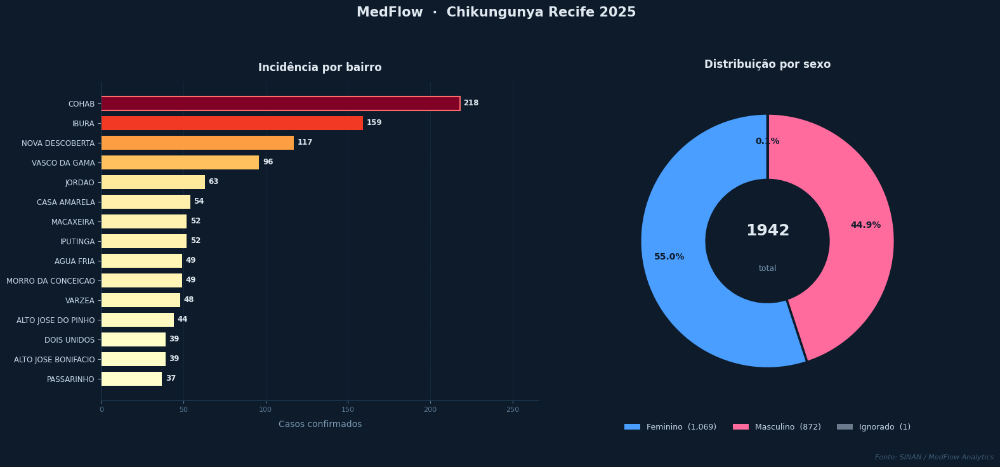
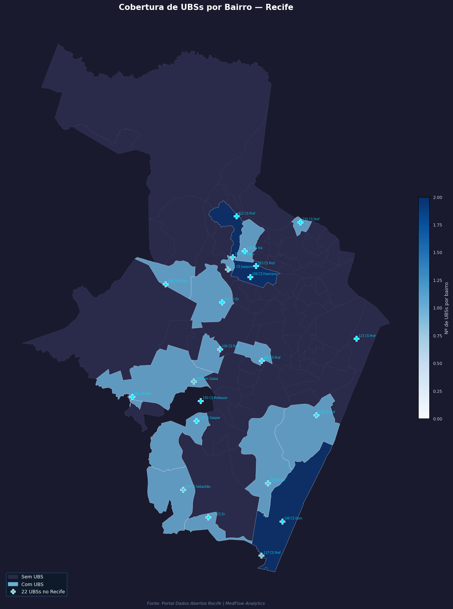
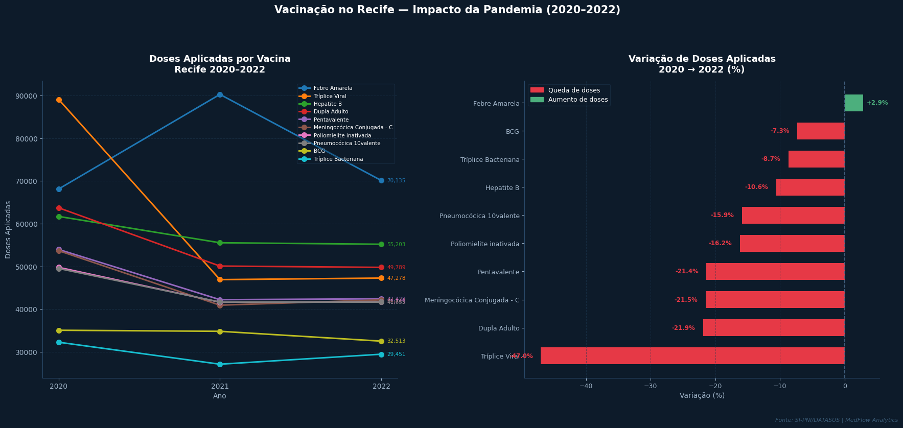

Visão Geral
Dados consolidados da rede municipal de saúde do Recife
—
Pacientes cadastrados
—
Profissionais ativos
—
Unidades de saúde
—
Total de consultas
—
Exames registrados
—
Prontuários eletrônicos
Consultas por status
Carregando...
Por especialidade
Carregando...
Últimas consultas registradas
| Data/Hora | Paciente | Profissional | Unidade | Status |
|---|---|---|---|---|
| Carregando... | ||||
Unidades de Saúde
Rede municipal ativa no Recife
Todas as unidades
| Nome | Tipo | Endereço | Cidade | Telefone | Consultas |
|---|---|---|---|---|---|
| Carregando... | |||||
Consultas por Unidade
Distribuição e taxa de cancelamento por unidade de saúde
Desempenho por unidade
| Unidade | Tipo | Total | Concluídas | Canceladas | Taxa cancelamento |
|---|---|---|---|---|---|
| Carregando... | |||||
Indicadores Epidemiológicos
Dados da Secretaria de Saúde do Recife
Mapa de calor — Chikungunya no Recife
Abrir em nova aba
Incidência por bairro e sexo

Cobertura de UBSs por bairro

Vacinação no Recife (2020–2022)
